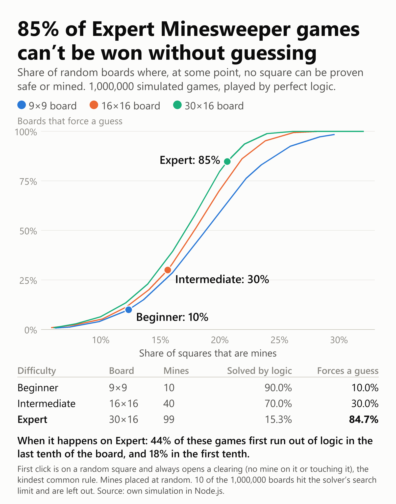

How often does Minesweeper force you to guess?
Everyone who has played Minesweeper knows the moment. Two covered squares, one mine, and nothing left to reason with. You tap one and hope.
I wanted a real number for how often that happens, so I played 1,000,000 random boards with a solver that only makes moves it can prove. It stops the moment no square can be proven safe or proven to be a mine.
| Difficulty | Board | Mines | Mine density | Forces a guess | 95% interval |
|---|---|---|---|---|---|
| Beginner | 9×9 | 10 | 12.3% | 9.95% | 9.82 to 10.08 |
| Intermediate | 16×16 | 40 | 15.6% | 30.00% | 29.80 to 30.21 |
| Expert | 30×16 | 99 | 20.6% | 84.73% | 84.58 to 84.89 |
So about 5 of every 6 Expert boards can't be finished by logic alone, even for a perfect player. If you've ever felt that Expert comes down to luck in the end, you're mostly right.

What "forces a guess" means here
After every move, the solver looks at all the visible numbers plus the total count of mines left. If no covered square can be proven either way, the board counts as forcing a guess.
That guess isn't always a coin flip. The odds can be well in your favor, but you still can't prove the move. This measures whether logic is enough, not how often people win.
Mines are placed at random. The first click lands on a random square and always opens a clearing, so there's no mine on it or touching it. That's the kindest common rule. A game that only promises a safe first click should force more guesses, but I didn't test that.
Density matters more than size
I also ran 10,000 boards at each of 40 extra settings, varying the share of squares that hold mines. At the same density, bigger boards force more guesses, because there are more places to get stuck. But density does most of the work:
| Mine density | 9×9 | 16×16 | 30×16 |
|---|---|---|---|
| 10% | 4.0% | 5.3% | 6.4% |
| 14% | 14.9% | 20.1% | 23.0% |
| 18% | 47.6% | 50.9% | 57.8% |
| 22% | 76.4% | 86.2% | 93.6% |
| 26% | 92.5% | 99.3% | 99.9% |
The climb is steep. On the Expert board, going from 14% to 22% takes you from about 1 board in 4 to almost every board. Expert's 99 mines sit right near the top of that climb.
The last-two-squares feeling is real
I recorded how much of the board was already cleared when the solver got stuck. Among boards that force a guess:
| Difficulty | Stuck with under 10% cleared | Stuck with 90% or more cleared |
|---|---|---|
| Beginner | 7.3% | 55.4% |
| Intermediate | 16.7% | 67.7% |
| Expert | 18.5% | 43.6% |
So a forced guess usually comes near the very end, right when losing hurts most. On Intermediate, two out of three arrive with at least 90% of the safe squares already open. Expert has a second problem: nearly 1 in 5 of its forced guesses shows up almost immediately.
What this means for no-guess boards
Some Minesweeper games promise boards you never have to guess on. The simplest way to build one is to generate random boards and throw away any the solver can't finish. At Expert settings only 15.27% survive, so you'd need about 6.5 tries on average for each usable board. For a game that needs them on demand on a phone, that's not free, but it's very doable.
How I checked the solver
A wrong solver would make all of this worthless, so I tested it against brute force on 10,000 small boards (6×6 and 7×7):
- None of its moves went against the real mines.
- At 3,483 stuck positions, I tried every possible placement of the remaining mines. It hadn't missed a single provable square.
- Another 491 stuck positions had too many covered squares to brute force, so I skipped them.
Full-size boards are too big for this check, so it only covers small ones. During the main run, 10 of the 1,000,000 boards hit the solver's search limit of 5,000,000 steps, 6 of them on Expert. They're left out of the percentages. Those 6 can't move the Expert figure by even 0.01 points, whichever way they'd go.
Limits
- Each board was played from one random first click. The same mines with a different first click can give a different answer.
- Real versions of Minesweeper differ on the first click, so their numbers will differ from these.
- This counts boards that need at least one guess. It doesn't count how many guesses they need.
The full data is here: results.csv. If you think I got something wrong, I'd really like to hear it.